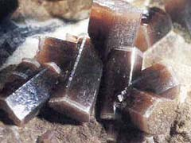

생성원리

정의 Definition
인산염, 비산염, 바나듐산염 광물은 비슷한 결정구조를 가지며, P, As, V 원소가 산소와 각각 동일하게 사면체상으로 결합해 있고, 소량으로 넓은 영역에 분포하며, 경도가 약해 깨지기 쉽습니다. 인산염은 금속원소와 인산염기(PO4)3-, 가 결합한 화합물을 말하고, 비산염은 금속원소와 비산염기[(AsO4)3-, or (AsO3)-]가 결합한 화합물, 바나듐산염은 금속원소와 바나듐산염기[(VO4)3- or (VO3)-]가 결합한 화합물을 말합니다.
종류 Class
총 7종의 이미지가 있습니다.


이름 (name)
인회석-1(apatite)
특 성 (characteristics)
- 가) 개요
- 투명, 반투명한 육방정계의 인산염 광물로 F, Cl, OH 성분의 변화에 따라 플루오르화인회석, 염화인회석, 수산화인회석으로 크게 구분되며 인(P)을 획득하는 대표적인 광물이다.
나) 화학식 : Ca5(PO4)3(F,Cl,OH)
(Ca:칼슘, P:인, F:불소, Cl:염소, O:산소, OH-:수산화기)
- 다) 산출지 : 러시아
- (주요 생산국가 : 중국, 모로코·서사하라, 브라질, 남아프리카공화국)
라) 물리화학적 성질
| 구분 | 설명 |
|---|---|
| cleavage(쪼개짐) | 명료 |
| fracture(깨짐) | brittle한 패각상, 표면이 매끈하게 조각난 형태로 발달 |
| color(색) | 무색, 흰색, 황색, 녹색, 적색 |
| density(밀도) | 3.16~3.22 |
| hardness(경도) | 5 |
| crystal system(결정계) | 육방정계 |
| luster(광택) | 지방광택 |
| streak(조흔색) | 흰색 |
- 마) 용도
- 보석으로 쓰이지만 경도가 약해 품질이 떨어지며, 인(P)의 광석으로 주로 사용되어 성냥제조, 농약재료, 세제용 등에 쓰인다.
이름 (name)
인회석-2(apatite)
특 성 (characteristics)
- 가) 개요
- 투명, 반투명한 육방정계의 인산염 광물로 F, Cl, OH 성분의 변화에 따라 플루오르화인회석, 염화인회석, 수산화인회석으로 크게 구분되며 인(P)을 획득하는 대표적인 광물이다.
나) 화학식 : Ca5(PO4)3(F,Cl,OH)
(Ca:칼슘, P:인, F:불소, Cl:염소, O:산소, OH:수산화기)
- 다) 산출지 : 러시아
- (주요 생산국가 : 중국, 모로코·서사하라, 브라질, 남아프리카공화국)
라) 물리화학적 성질
| 구분 | 설명 |
|---|---|
| cleavage(쪼개짐) | 명료 |
| fracture(깨짐) | brittle한 패각상, 표면이 매끈하게 조각난 형태로 발달 |
| color(색) | 무색, 흰색, 황색, 녹색, 적색 |
| density(밀도) | 3.16~3.22 |
| hardness(경도) | 5 |
| crystal system(결정계) | 육방정계 |
| luster(광택) | 지방광택 |
| streak(조흔색) | 흰색 |
- 마) 용도
- 보석으로 쓰이지만 경도가 약해 품질이 떨어지며, 인(P)의 광석으로 주로 사용되어 성냥제조, 농약재료, 세제용 등에 쓰인다.

- 
이름 (name)
녹연석(pyromorphite)
특 성 (characteristics)
- 가) 개요
- 납(Pb)과 염소(Cl)를 함유한 육방정계의 인산염 광물로, 불룩하고 짧은 육각기둥 형태의 결정이 나타나며, 납 광상의 산화대에서 주로 산출된다. 갈연석(vanadinite), 황연석(mimetite)과 동일한 계열의 하나로 내부특성이 이들과 매우 유사하여 화학적 실험으로 구분할 수 있다.
나) 화학식 : Pb5(PO4)3Cl (Pb:납, P:인, Cl:염소, O:산소)
- 다) 산출지 : 중국
- (주요 생산국가 : 미국, 프랑스, 멕시코, 독일, 호주)
라) 물리화학적 성질
| 구분 | 설명 |
|---|---|
| cleavage(쪼개짐) | none |
| fracture(깨짐) | brittle하게 깨져 들쑥날쑥한 유리파편 형태로 발달 |
| color(색) | 녹색, 노란색, 갈색, 회백색 |
| density(밀도) | 6.7~7.0 |
| hardness(경도) | 3.5~4 |
| crystal system(결정계) | 육방정계 |
| luster(광택) | 지방광택, 금강광택 |
| streak(조흔색) | 백색~회색 |
- 마) 용도
- 납(Pb)의 원광이 되지만, 매장량이 적어 대량산출이 힘들어 광물표본으로 이용된다.
이름 (name)
모나자이트(monazite-Ce)
특 성 (characteristics)
- 가) 개요
- 세륨족의 희토류 원소를 지닌 인산염 광물로, 세륨(Ce)이 지배적으로 포함된 모나자이트이다. 세륨, 토륨(Th), 란탄(La)의 중요한 광석이며, 특히 토륨에 의해 모나자이트가 약한 방사성을 띠게 된다.
나) 화학식 : (Ce,La,Nd,Th,Y)PO4
(Ce:세륨, La:란탄, Nd:네오디뮴, Th:토륨, Y:이트륨, P:인, O:산소)
- 다) 산출지 : 미국
- (주요 생산국가 : 인도, 마다가스카르, 남아프리카공화국, 스리랑카, 중국)
라) 물리화학적 성질
| 구분 | 설명 |
|---|---|
| cleavage(쪼개짐) | perfect |
| fracture(깨짐) | brittle한 패각상, 표면이 매끈하게 조각난 형태로 발달 |
| color(색) | 갈색, 무색, 녹색계열, 황색 |
| density(밀도) | 4.8~5.5 |
| hardness(경도) | 5~5.5 |
| crystal system(결정계) | 단사정계 |
| luster(광택) | 지방광택, 금강광택 |
| streak(조흔색) | 담황색~담적갈색 |
- 마) 용도
- 세륨과 토륨의 원광으로, 세륨은 로켓엔진에 이용되는 경합금, 라이터돌, 형광등 등에 쓰이며, 토륨은 원자로원료, 특수유리, 합금, 가스맨틀 등에 이용된다. 또한 희유원소인 란탄과 이트륨의 원광이 되기도 한다.
이름 (name)
제노타임(xenotime)
특 성 (characteristics)
- 가) 개요
- 주기율표 3A족에 속하는 희토류 원소인 이트륨(Y)을 함유한 인산염 광물로, 주상형 또는 피라미드형 결정을 이룬다. 페그마타이트와 산성 화성암에서 지르콘(zircon)과 모나자이트(monazite)와 함께 소량으로 산출되며 외관상 지르콘과 비슷하나 경도에서 차이를 보인다.(지르콘:7.5, 제노타임:4.5)
나) 화학식 : YPO4 (Y:이트륨, P:인, O:산소)
- 다) 산출지 : 노르웨이, 브라질(사진좌측부터)
- (주요 생산국가 : 노르웨이, 브라질, 마다가스카르, 미국, 일본)
라) 물리화학적 성질
| 구분 | 설명 |
|---|---|
| cleavage(쪼개짐) | perfect |
| fracture(깨짐) | splintery, 얇고 길게 늘어진 형태로 깨짐 |
| color(색) | 황갈색, 녹갈색, 회색, 적갈색 |
| density(밀도) | 4.5~5.1 |
| hardness(경도) | 4~5 |
| crystal system(결정계) | 정방정계 |
| luster(광택) | 유리광택, 지방광택 |
| streak(조흔색) | 담적갈색 |
- 마) 용도
- 희토류 원소인 이트륨의 원광으로, 이트륨은 컬러TV 스크린, 레이더, 카메라 렌즈 등에 이용된다.
이름 (name)
황연석(mimetite)
특 성 (characteristics)
- 가) 개요
- 납(Pb)과 염소(Cl)가 함유된 육방정계의 비산염 광물로, 가늘고 긴 주상결정이며 포도알 형태로도 산출된다. 열수에 의해 변질된 납 광상의 산화대에서 방연석(galena), 갈연석(vanadinite), 녹연석(pyromorphite) 등과 같이 산출된다.
나) 화학식 : Pb5(AsO4)3Cl (Pb:납, As:비소, Cl:염소, O:산소)
- 다) 산출지 : 미국
- (주요 생산국가 : 멕시코, 미국, 영국, 아프리카지역)
라) 물리화학적 성질
| 구분 | 설명 |
|---|---|
| cleavage(쪼개짐) | 불확실 |
| fracture(깨짐) | 패각상, 매우 brittle하게 조각난 형태로 발달 |
| color(색) | 흰색, 노란색, 오렌지색, 갈색, 적색 |
| density(밀도) | 7.28 |
| hardness(경도) | 3.5~4 |
| crystal system(결정계) | 육방정계 |
| luster(광택) | 금강광택, 수지광택 |
| streak(조흔색) | 흰색 |
- 마) 용도
- 납(Pb)의 광석이기에는 함량이 적고, 보석이기에는 경도가 약해 광물수집가의 광물표본으로 사용된다.
이름 (name)
갈연석(vanadinite)
특 성 (characteristics)
- 가) 개요
- 납(Pb)과 염소(Cl)를 함유한 바나듐산 광물로 주상형 및 섬유질의 결정이며, 납 광상 내 산화대에서 산출된다. 모로코가 대표적인 생산국이며, 바나듐(V)을 획득하는 중요한 광물이다.
나) 화학식 : Pb5(VO4)3Cl (Pb:납, V:바나듐, Cl:염소, O:산소)
- 다) 산출지 : 모로코
- (주요 생산국가 : 모로코, 나미비아, 멕시코, 미국, 아르헨티나)
라) 물리화학적 성질
| 구분 | 설명 |
|---|---|
| cleavage(쪼개짐) | none |
| fracture(깨짐) | 패각상, 매우 brittle하게 조각난 형태로 발달 |
| color(색) | 무색, 갈색, 적갈색, 노란색 |
| density(밀도) | 6.8~7.1 |
| hardness(경도) | 3 |
| crystal system(결정계) | 육방정계 |
| luster(광택) | 금강광택 |
| streak(조흔색) | 백색~적황색 |
- 마) 용도
- 바나듐(V)의 주된 원석으로, 바나듐은 특수강 첨가제, 합금용, 영구자석, UV차단용 유리 등에 주로 사용된다.